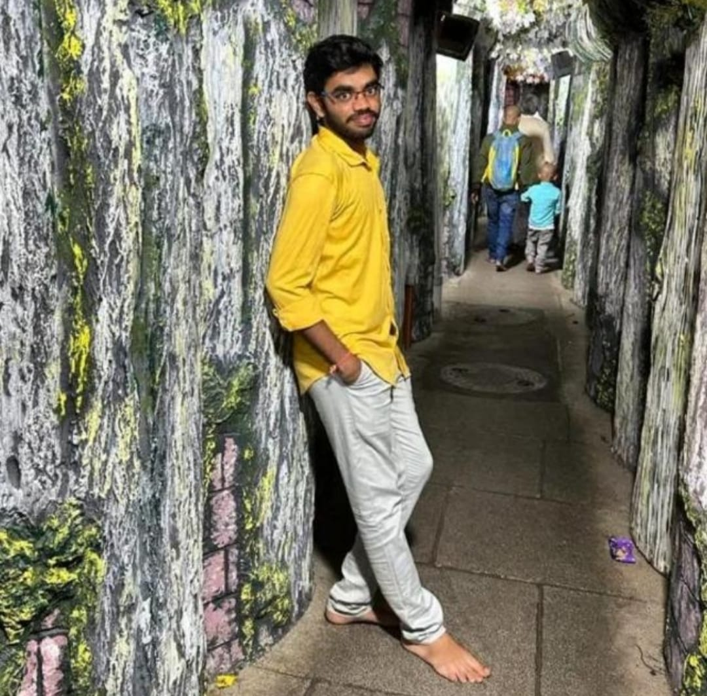

Ravilisetty Sai Krishna

Summary
To work in an organization with a professional work driven environment where I can utilize and apply my knowledge, skills which would enable me as a fresh graduate to grow while fulfilling organizational goals.
Education
- I am completed my B.E in Computer Science & Engineering in Saveetha School of Engineering, Chennai with 8.32 CGPA.
- I studied Higher Secondary Education in Sri Chaitanya Junior College,Bapatla With 9.2 CGPA.
- I Studied my Secondary Education in Sri chaitanya school, Ponnur with 9.2 CGPA.
Certification Courses
Skills
- .Net Core,
- ASP.net MVC,
- Power Business Intelligence,
- Java Core.
Hobbies
- Playing Cricket,
- Travelling,
- Carroms.